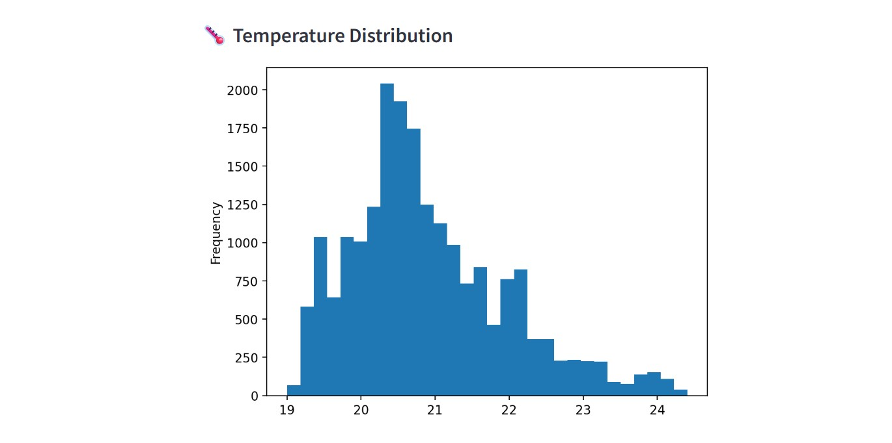
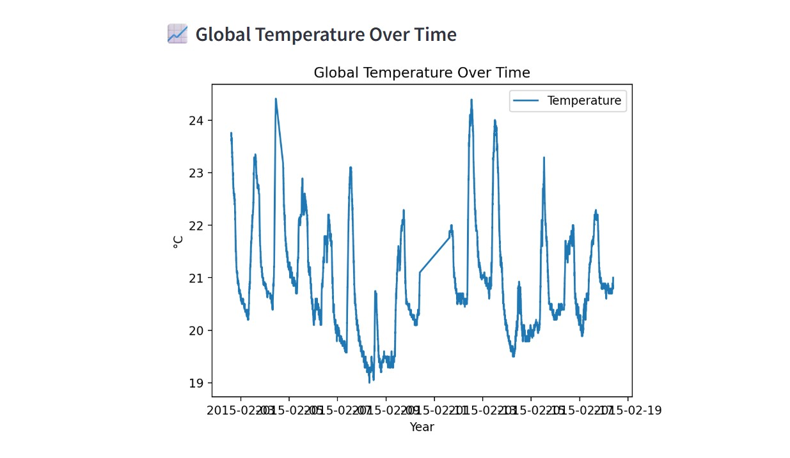
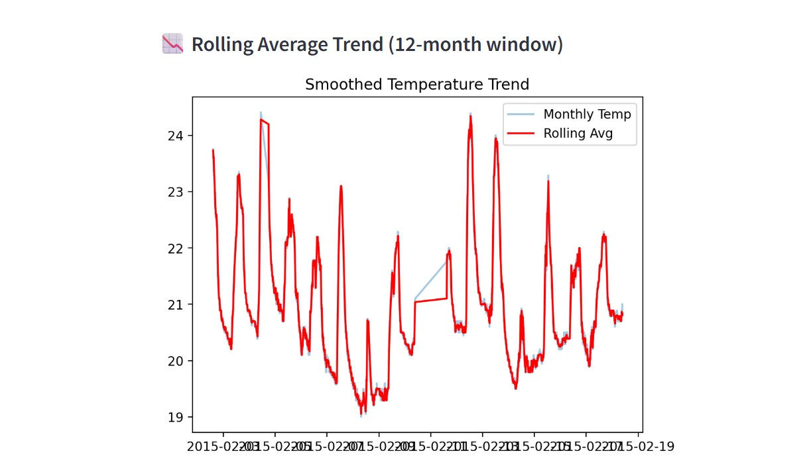
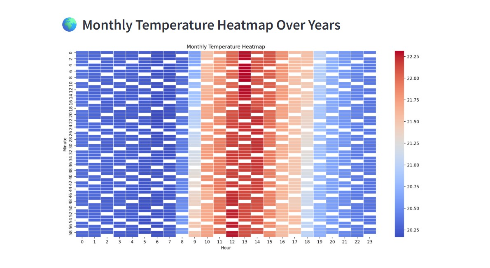
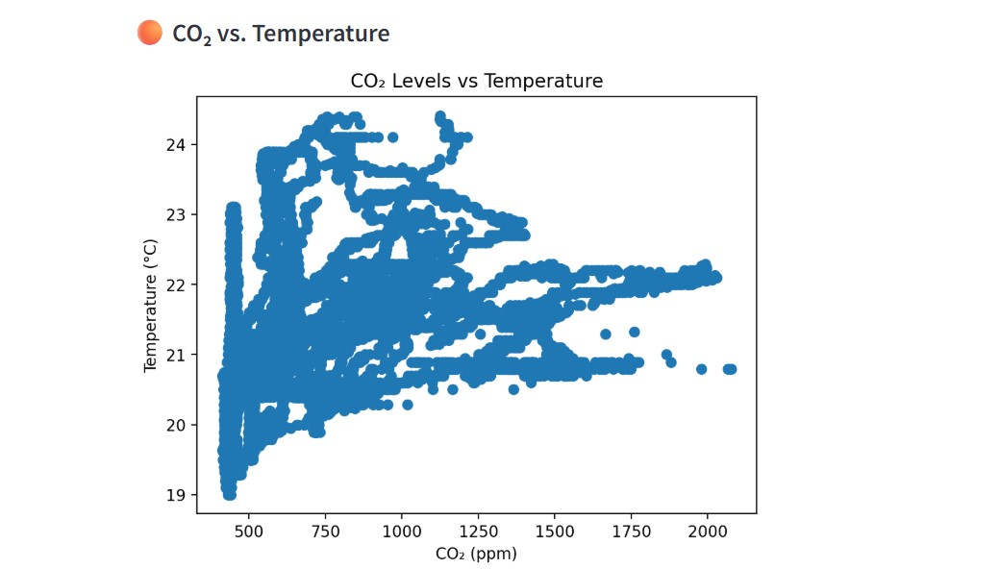
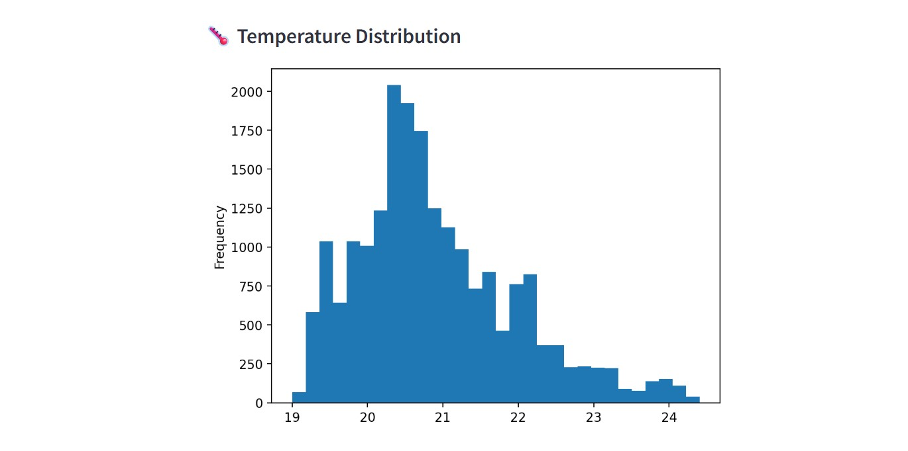
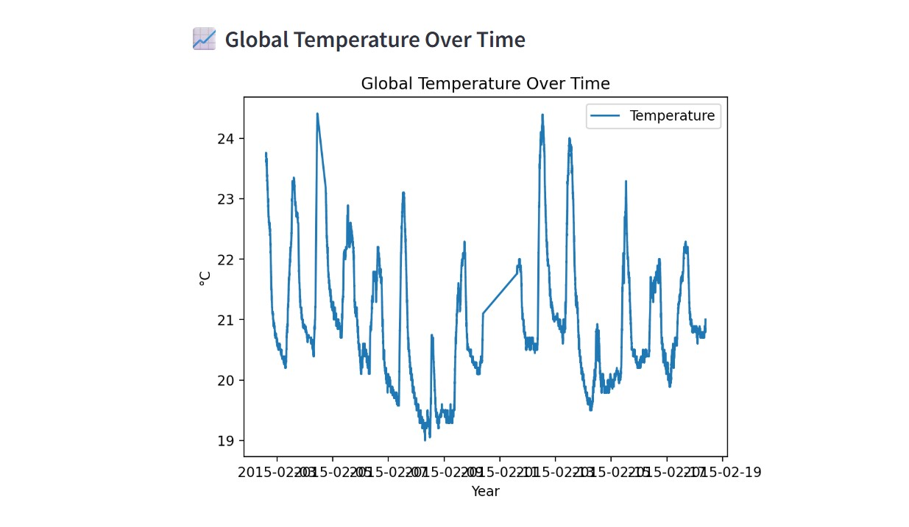
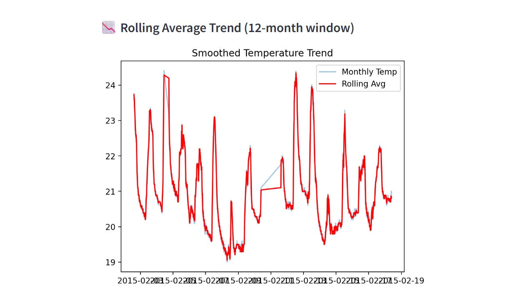
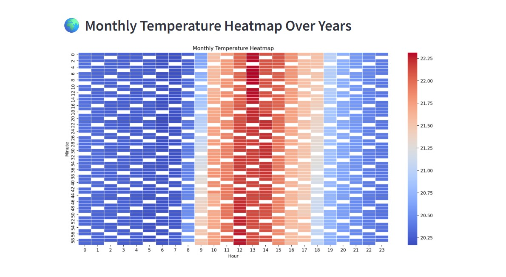
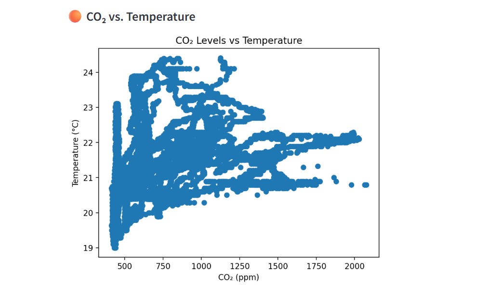

üå°Ô∏è Climate Trend Analyzer
Climate Trend Analyzer | Link
● Developed an interactive climate dashboard using Streamlit to visualize global temperature trends using historical data.
● Key features include line plots, histograms, rolling average analysis, monthly heatmaps, and optional CO₂ vs. temperature scatter plots.
● Provides sidebar filters for dynamic data exploration, useful for researchers, analysts, and climate scientists.
● Built-in support for large CSV uploads and real-time statistical summaries.
Technologies: Streamlit, Pandas, Matplotlib, Seaborn
CSV File Structure:
Date,Temperature,Humidity,Light,CO2,HumidityRatio
2015-02-02 14:19:00,23.7,26.272,585.2,749.2,0.00476
2015-02-02 14:19:59,23.718,26.29,578.4,760.4,0.00477
2015-02-02 14:21:00,23.73,26.23,572.66666,769.66666,0.00476
2015-02-02 14:22:00,23.7225,26.125,493.75,774.75,0.00474
Project Files: Climate
Output:
 




